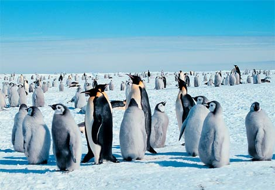

Click Picture To Change
| Fast Facts | |
|---|---|
| Type: | Bird |
| Diet: | Carnivore |
| Size: | 41 to 112 cm |
| Weight: | 2 to 90 lbs |
| Protection status: | Fine |
Penguins are a group of aquatic birds who's number of species is widely debated. Depending on who's authority is followed there are anywhere from 17 to 20 different species in the Spheniscidae (Penguin) family. The penguin is found almost exclusively in the Southern Hemisphere. Contrary to popular belief, penguins aren't found only in cold enviroments. They do live in warmer climates as well. In fact only a few species actually reside as far south as antartica. Penguins can be found as far north as the Galapagos Islands.
Penguins seem to have no special fear of humans and have approached groups of explorers without hesitation. This is probably on account of there being no land predators in Antarctica or the nearby offshore islands that prey on or attack penguins. Instead, penguins are at risk at sea from predators such as the leopard seal. Typically, penguins do not approach closer than about 3 meters (10 ft) at which point they become nervous. This is also the distance that Antarctic tourists are told to keep from penguins (tourists are not supposed to approach closer than 3 meters, but are not expected to withdraw if the penguins come closer).
Most penguins feed on krill, fish, squid, and other forms of sealife caught while swimming underwater. They spend half of their life on land and half in the oceans.